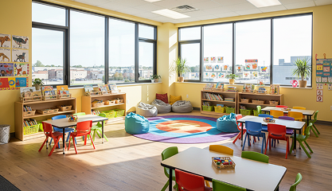
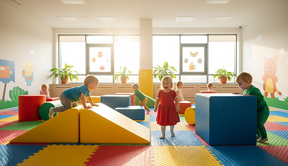
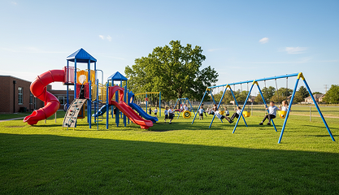

Fasilitas Unggulan
Al Azhar Kelapa Gading
Masjid Al-Azhar
Pusat pembinaan spiritual dan praktik ibadah harian bagi seluruh siswa dan staf pengajar.
Laboratorium Modern
Fasilitas sains, komputer, dan bahasa yang dilengkapi dengan peralatan terkini untuk mendukung riset.
Lapangan Olahraga
Area olahraga multifungsi indoor dan outdoor untuk pengembangan bakat non-akademik siswa.
Program
Pendidikan
TK Islam
Pendidikan dasar yang menekankan pada pembentukan karakter, literasi, dan dasar-dasar keislaman.
Lihat KurikulumSD Islam
Pendidikan dasar yang menekankan pada pembentukan karakter, literasi, dan dasar-dasar keislaman.
Lihat KurikulumSMP Islam
Pengembangan kemandirian dan eksplorasi minat bakat melalui kurikulum yang menantang dan inovatif.
Lihat KurikulumSMA Islam
Persiapan jenjang perguruan tinggi dengan pembekalan akademik yang kuat dan kepemimpinan islami.
Lihat KurikulumGaleri
Sekolah

Ruang Kelas Tematik
Kelas yang didesain secara visual untuk merangsang kognitif anak sesuai tema pembelajaran bulanan.

Area Bermain Indoor
Area bermain yang aman dan nyaman untuk melatih motorik kasar meskipun cuaca tidak mendukung.

Playground Outdoor
Taman bermain luas dengan berbagai wahana untuk interaksi sosial dan ketangkasan fisik.
Dapatkan Informasi Lebih Lanjut
Bergabunglah dengan keluarga besar Al-Azhar Kelapa Gading dan buka potensi terbaik ananda sejak usia dini.